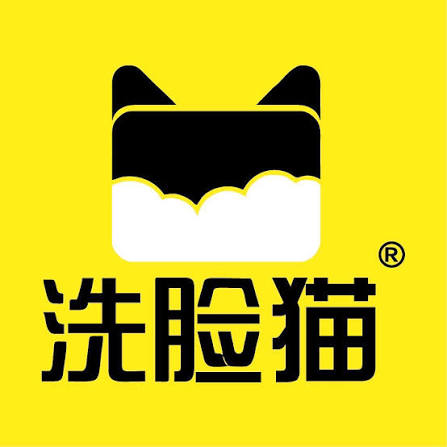
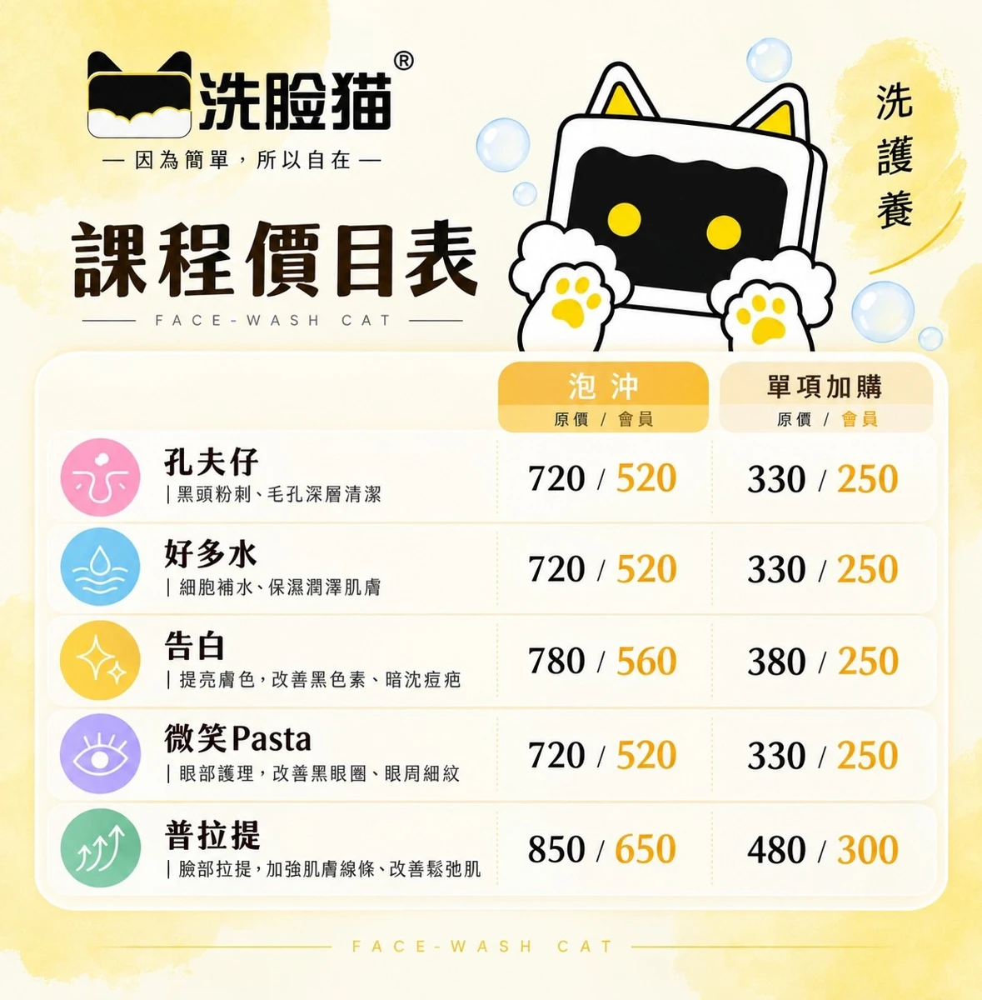
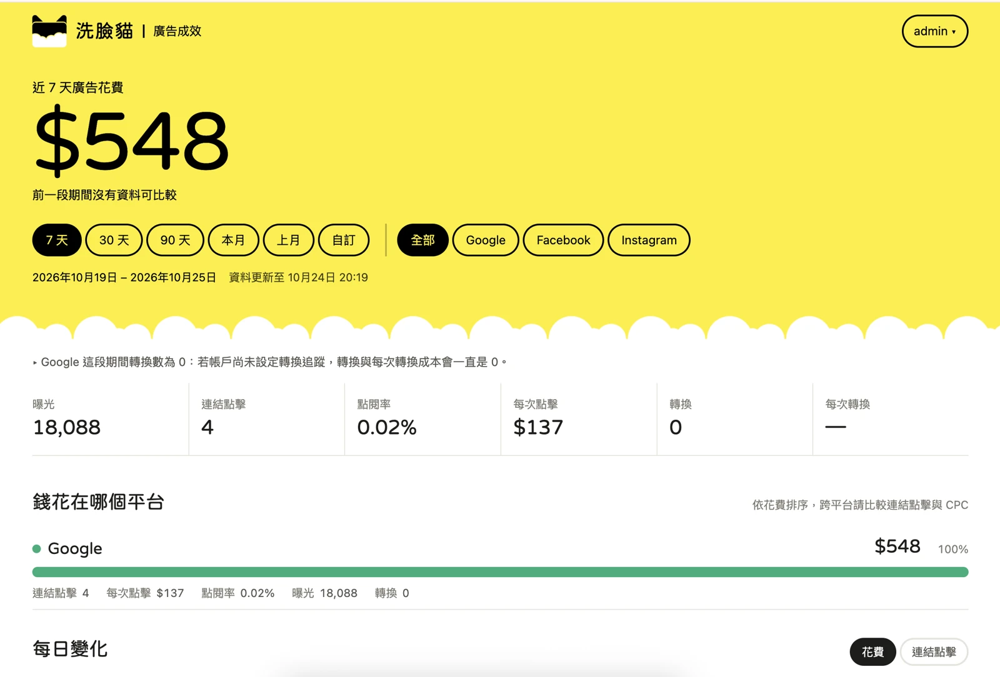

廣告與成效儀表板
廣告正在帶來曝光，已另行製作的儀表板可以查看平台表現。

洗臉貓鶯歌鳳鳴店 · 獲客提案合作方案 ↗目前沒有獨立官網，也希望有自己喜歡的多頁網站。
廣告正在帶來曝光，已另行製作的儀表板可以查看平台表現。
短期需要承接廣告，也希望網站能長期回答不同客人的問題。
先把療程、費用、初訪流程與門市資訊說清楚，再持續擴充主題。
可以同步運作，投入與成效要分開看。
付費取得廣告曝光與點擊機會
讓網站更有機會回應相關搜尋
活動推廣、測試訴求、導向預約
回答需求、建立信任、累積主題
上線後可較快觀察，仍需測試優化
持續投入內容與維護，通常需數月觀察
停止投放後，付費曝光通常隨之停止
既有內容仍可能帶來流量，排名會變動
有效詢問、預約與每次獲客成本
相關自然流量與後續預約、到店
SEO 也有製作與維護成本，投廣告不會直接提高自然搜尋排名。
當客人搜尋「鶯歌清粉刺」，網站需要有一頁真的能回答他。
網站能正常開啟，頁面可以被探索，手機閱讀順暢。
說明服務內容、費用條件、初訪流程與門市位置，讓人能做決定。
相關文章連到療程或門市頁，再引導預約與諮詢。
認識護理內容、初次到店流程與預約方式。實際價格與服務內容以門市確認為準。
建議採用可擴充的多頁架構，同時保留廣告專用的快速預約頁。
單一活動、單一主打服務時，資訊集中、行動明確。
不同頁面各自回答問題，共用一致的預約入口。
頁數本身不保證 SEO。每頁需有獨立用途，避免把同樣內容換地名重複刊登。
參考另一家加盟主的資訊分工，網站仍使用本店核定的品牌與內容。

官網與提案統一使用本店提供的平面 Logo，保留原始比例與黃、黑、白品牌色。
補上本店門面、空間、團隊與實際服務照片，避免讓客人誤認其他門市。
療程、價格與預約規則逐項核定，不直接沿用其他加盟店的承諾。
點選不同情境，看軟性內容怎麼連回門市預約。
這些是待驗證的候選字，依服務關聯與預約意圖排優先順序。
鶯歌做臉、鳳鳴清粉刺
以門市與服務頁承接。
做臉一次多少錢、第一次做臉流程
先把決策問題說清楚。
男生第一次做臉、下班做臉
用有關聯的內容建立信任。
尚未取得 Keyword Planner 搜尋量與出價資料。本表不代表熱門度、實際排名或已驗證需求，後續用搜尋詞與 Search Console 驗證。
以下為內容架構示意，細節需由門市依實際服務補上。
流程怎麼進行？需要預約嗎？費用怎麼算？先知道會發生什麼，初次到店更安心。
「男生做臉會尷尬嗎」比品牌介紹更貼近初訪者。
實拍環境、流程與明確規則，補足第一次體驗的想像。
看完再選擇護理項目，詢問適合的時段。
優先服務鶯歌與鳳鳴，其他鄰近區域依實際來客與交通便利性評估。
本店名稱、地址、電話、營業時間與預約連結，在商家檔案與官網一致呈現。
加入本店門面、停車與交通資訊，讓查完的人知道怎麼來。
邀請真實體驗者留下自主評價，累積可以辨識本店的內容。
Google 在地結果會考量關聯性、距離與知名度。網站與商家經營可改善資訊品質，無法保證地圖排名。
例如：「我住鳳鳴，第一次做臉，想先知道流程和費用。」
本店在哪裡、提供什麼護理、流程與費用條件、如何預約，以及實際的消費規則。
清楚文字 實際照片 可查證資訊Google 說明：AI 搜尋功能仍適用 SEO 基本做法。可被探索的頁面與有幫助的內容，是共同基礎。
補上實際初訪問題、團隊解說與門市照片，避免只有通用的保養文章。
AI 是否引用、推薦及帶來流量都無法保證。Google AI 與其他 AI 平台的結果也可能不同。
現有廣告儀表板快照，呈現當時的曝光與點擊，非即時資料。

點擊查看原始畫面 ↗畫面顯示 CTR 0.02%、轉換 0，並提醒可能尚未設定追蹤。不能直接推論完全沒有客人或廣告無效。
樣本僅 4 次點擊，也沒有前期比較資料。先確認流量來源、落地頁與轉換設定，再判斷成效。
截圖區間 2026/10/19–10/25既有廣告儀表板為另行收費項目；以下為網站與 SEO 的追蹤建議，尚未表示已串接。
收錄、查詢詞、曝光、自然點擊
來源、落地頁與服務內容瀏覽
LINE／電話／預約按鈕點擊
有效詢問、完成預約、到店與營收
加 LINE 點擊不代表已加好友，也不代表完成預約。需與實際詢問、預約紀錄核對。
廣告與自然搜尋分開看，也追蹤品牌詞與非品牌詞；以預約品質修正內容。
可調整假設，理解數字之間的關係。這是算式示意，並非成效預測。
SEO 需要長期投入。上線是開始，後續用累積的數據決定下一次優化。
核定品牌素材，完成核心頁面、手機版、預約入口及搜尋追蹤設定。
從在地服務、費用與初訪內容起步，再依詢問紀錄拓展男性、生活情境與保養主題。
檢查收錄、查詢詞與有效詢問，改善缺少資訊或沒有接到預約的頁面。
Google 提醒部分變更可能需數月才反映。搜尋排名、流量與預約量皆無保證。
網站建立獲客入口，SEO 持續擴充內容。三種方案以服務期間與文章總量區分。
12 個月服務 · SEO 文章 10 篇
最多 12 期零利率，每期 NT$12,500。
24 個月服務 · SEO 文章 20 篇
最多 24 期零利率，每期 NT$10,000。
36 個月服務 · SEO 文章 30 篇
最多 24 期零利率，每期 NT$12,500。平均每月金額以 36 個月服務期間計算。
本店從官網起步，需要持續補足服務與初訪內容。24 個月、20 篇文章，可逐步涵蓋更多主題並安排成效檢視。
三年方案是 36 個月服務、最多 24 期付款。廣告媒體費、代操與既有儀表板另行計費，新增功能與串接依範圍確認。
以上依標準方案列示，皆為未稅價格。實際網站頁數、建置項目、文章安排、維護與付款適用條件，以雙方報價及合約確認。
選擇合作年期後，一起確認網站頁數、內容優先順序與維護範圍。
確認核心頁數、設計、手機版、內容上稿、網域主機與維護責任。
確認關鍵字研究、文章頻率、頁面優化、追蹤設定與定期檢視方式。
廣告媒體費、代操與既有儀表板各自列示，新增串接另行確認。
本店實拍照片、實際療程與價格、預約規則、主要服務商圈，以及網站與長期內容預算。
研究與整理日期：2026 年 10 月 25 日。
品牌圖、課程素材與廣告快照為本案提供資料。關鍵字為策略候選，沒有搜尋量或排名保證；情境試算不代表本店既有成果。